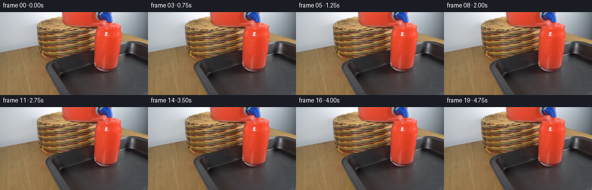
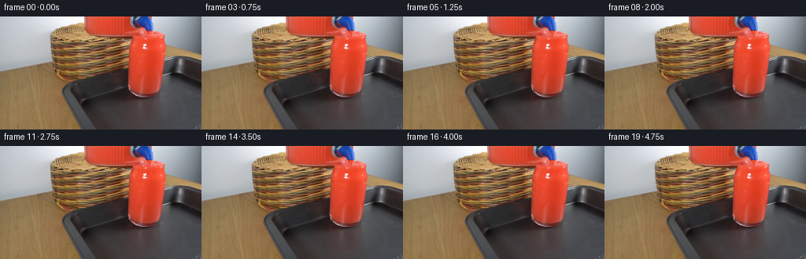
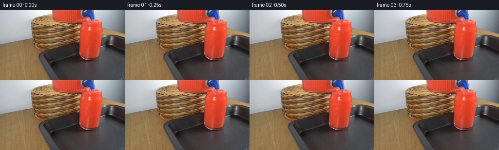

CODING AGENTS AS PIXEL WORLD MODELS
traex/GPT-6.1-Sol · 0088
点击播放 · 原生 RGB 像素
逐轮保存的候选
回放视频、检查图与代码变化。
每份候选均可单独播放。实际图片检查记录在下方工具轨迹中。
候选 01播放与检查图
点击播放 · 原生 RGB 像素

展开代码变化
--- 上一保存版本
+++ 本次保存版本
@@ -0,0 +1,132 @@
+from pathlib import Path
+import numpy as np
+from PIL import Image
+from scipy.ndimage import map_coordinates, gaussian_filter
+import artifact_io
+
+ROOT=Path(__file__).resolve().parent
+W,H=256,144
+S=4
+Y,X=np.mgrid[0:H*S,0:W*S].astype(np.float32)
+X=(X+.5)/S-.5
+Y=(Y+.5)/S-.5
+
+def smooth(a,b,z):
+ t=np.clip((z-a)/(b-a),0,1)
+ return t*t*(3-2*t)
+
+def sample(im,x=X,y=Y):
+ return np.stack([map_coordinates(im[...,c], [y,x],order=1,mode='nearest') for c in range(3)],-1)
+
+def composite(im, col, alpha):
+ return im*(1-alpha[...,None])+np.asarray(col)*alpha[...,None]
+
+def frame_at(base,t):
+ original=sample(base)
+ im=original.copy()
+ start=smooth(0,.40,t)
+ # The photograph is already partway through the pour: the receiving
+ # tumbler has only a little headroom. The slow jet adds a small volume.
+ rise=1.7*(1-np.exp(-t/4.8))
+ surface_y=23.5-rise
+ cx=187.6
+ sx=(X-cx)/22.0
+ sy=(Y-surface_y)/6.2
+ surf_radius=np.sqrt(sx*sx+sy*sy)
+ surface=(1-smooth(.82,1.02,surf_radius))*start
+ # Avoid altering the plastic tap or the fixed vessel edges/stand.
+ red=smooth(25,75,original[...,0]-original[...,1])
+ tap=(original[...,2]>original[...,0]*1.12)&(Y<19)
+ surface*=red*(1-tap)*smooth(164,168,X)*(1-smooth(207.0,210.0,X))
+
+ # Outgoing circular waves on a foreshortened liquid surface. Refraction
+ # advects photographic texture instead of replacing it with a flat fill.
+ rad=np.sqrt(((X-189.0)/1.0)**2+((Y-surface_y)/.34)**2+.5)
+ phase=rad*1.26-12.5*t
+ decay=np.exp(-rad/15)
+ wave=np.sin(phase)*decay
+ disp_y=.34*wave+.13*np.sin(1.3*X+7*t)*decay
+ disp_x=.16*np.cos(phase)*(X-189)/np.maximum(rad,1)
+ warped=sample(base,X+disp_x,Y+disp_y+rise*.40)
+ im=composite(im,warped,surface*.83)
+ # Fresnel sheen from the crests is slight and colored by the liquid.
+ lum=(2.2*np.cos(phase)+1.0*np.sin(2*phase+.8))*decay
+ im+=surface[...,None]*lum[...,None]*np.array([.30,1.0,.88])
+
+ # Slightly rising liquid wets the inside wall immediately below the rim.
+ # Keep all original high-contrast front-wall glass highlights unchanged.
+ side=smooth(27,30,Y)*(1-smooth(49,56,Y))*smooth(168,172,X)*(1-smooth(206,208,X))
+ glint=(1-smooth(130,185,original[...,1]))
+ swirl=(np.sin((X-188)*.48+(Y-29)*.22-5.1*t)+.45*np.sin(X*.75-Y*.3+7*t))
+ impact_fade=np.exp(-((X-189)/7)**2)*np.exp(-np.maximum(Y-28,0)/18)
+ im+=side[...,None]*glint[...,None]*impact_fade[...,None]*start*swirl[...,None]*np.array([1.2,2.0,1.45])
+
+ # Falling jet emerges from the existing blue tap. Its radius contracts
+ # under gravity; no camera, vessel, or background motion is introduced.
+ bottom=surface_y+2.0
+ yn=np.clip((Y-17.25)/max(bottom-17.25,1),0,1)
+ center=188.85+.34*yn+.08*np.sin(22*t-2.8*Y)*yn
+ radius=1.12-.24*yn+.07*np.sin(22*t-3.4*Y)
+ dx=X-center
+ jet=(1-smooth(radius-.27,radius+.27,abs(dx)))
+ jet*=smooth(16.8,17.65,Y)*(1-smooth(bottom-.15,bottom+.75,Y))*start
+ jet*=1-tap
+ # Translucent thin liquid column, with a dark side and a narrow pink
+ # specular streak; colors are derived from the existing red beverage.
+ axial=.5+.5*np.sin(28*t-4.6*Y)
+ highlight=np.exp(-((dx+.36)/.22)**2)
+ jetcol=np.empty_like(im)
+ jetcol[...,0]=231+10*highlight+3*axial
+ jetcol[...,1]=63+49*highlight+5*axial
+ jetcol[...,2]=39+40*highlight+4*axial
+ jetcol-=np.exp(-((dx-.64)/.30)**2)[...,None]*np.array([32,20,14])
+ im=composite(im,jetcol,jet*.90)
+
+ # Small transient depression and spreading capillary ripples at impact.
+ impact=np.exp(-((X-189.05)/2.0)**2-((Y-surface_y-.4)/.67)**2)*start
+ im=composite(im,np.array([191,55,36]),impact*.25)
+ for n in range(3):
+ age=(t+.24*n)%(.72)
+ r=1.0+age*13.0
+ d=np.sqrt(((X-189.05))**2+((Y-surface_y-.3)/.30)**2+.1)
+ ring=np.exp(-((d-r)/.42)**2)
+ asym=np.clip(.55+.30*(X-189)/np.maximum(d,.5)+.20*np.sin(.3*X+n),.1,1)
+ amount=ring*np.exp(-age*3.2)*surface*asym
+ im+=amount[...,None]*np.array([4.0,13.0,10.5])
+ # Entrained pin-size bubbles just underneath the pouring point, drifting
+ # upward along the side of the current, not through the stationary glass.
+ for n in range(7):
+ age=(t+n*.193)%1.38
+ by=29+11*(1-age/1.38)
+ bx=189.6+2.9*np.sin(n*1.77)+.5*np.sin(age*4+n)
+ rr=.27+.12*np.sin(n*2.2)**2
+ dist=np.sqrt((X-bx)**2+((Y-by)/1.12)**2)
+ a=np.exp(-((dist-rr)/.17)**2)*.18*start*smooth(0,.12,age)*(1-smooth(1.05,1.38,age))
+ a*=red*glint
+ im=composite(im,[248,151,131],a)
+
+ # A very faint reflection of the active liquid in the pre-existing tray
+ # reflection under the glass; it stays spatially anchored.
+ refl=np.exp(-((X-186)/13)**2-((Y-106)/2.2)**2)*start
+ im+=refl[...,None]*(.8*np.sin(t*5))*np.array([1.4,.35,.25])
+ # Area downsampling gives subpixel stream edges and natural antialiasing.
+ result=np.clip(im,0,255).reshape(H,S,W,S,3).mean((1,3))
+ # Preserve every original pixel outside the active liquid regions. This
+ # also eliminates resampling blur on the locked-off photographic setup.
+ active=(surface+side*impact_fade*glint+jet+refl*.2)>1e-3
+ active=active.reshape(H,S,W,S).any((1,3))
+ result=np.rint(result).astype(np.uint8)
+ result[~active]=base.astype(np.uint8)[~active]
+ return result
+
+def main():
+ base=np.asarray(Image.open(ROOT/'first_frame.png').convert('RGB'))
+ frames=[base.copy()]
+ for i in range(1,20):
+ frames.append(frame_at(base.astype(np.float32),i/4))
+ frames=np.stack(frames).astype(np.uint8)
+ assert np.array_equal(frames[0],base)
+ artifact_io.save(frames,ROOT)
+
+if __name__=='__main__':
+ main()
候选 02播放与检查图
点击播放 · 原生 RGB 像素


展开代码变化
--- 上一保存版本
+++ 本次保存版本
@@ -1,7 +1,7 @@
from pathlib import Path
import numpy as np
from PIL import Image
-from scipy.ndimage import map_coordinates, gaussian_filter
+from scipy.ndimage import map_coordinates
import artifact_io
ROOT=Path(__file__).resolve().parent
@@ -45,12 +45,12 @@
phase=rad*1.26-12.5*t
decay=np.exp(-rad/15)
wave=np.sin(phase)*decay
- disp_y=.34*wave+.13*np.sin(1.3*X+7*t)*decay
- disp_x=.16*np.cos(phase)*(X-189)/np.maximum(rad,1)
+ disp_y=.67*wave+.25*np.sin(.65*X+9*t)*decay
+ disp_x=.37*np.cos(phase)*(X-189)/np.maximum(rad,1)
warped=sample(base,X+disp_x,Y+disp_y+rise*.40)
- im=composite(im,warped,surface*.83)
+ im=composite(im,warped,surface*.94)
# Fresnel sheen from the crests is slight and colored by the liquid.
- lum=(2.2*np.cos(phase)+1.0*np.sin(2*phase+.8))*decay
+ lum=(6.8*np.cos(phase)+2.0*np.sin(2*phase+.8))*decay
im+=surface[...,None]*lum[...,None]*np.array([.30,1.0,.88])
# Slightly rising liquid wets the inside wall immediately below the rim.
@@ -66,7 +66,7 @@
bottom=surface_y+2.0
yn=np.clip((Y-17.25)/max(bottom-17.25,1),0,1)
center=188.85+.34*yn+.08*np.sin(22*t-2.8*Y)*yn
- radius=1.12-.24*yn+.07*np.sin(22*t-3.4*Y)
+ radius=1.24-.22*yn+.12*np.sin(22*t-3.4*Y)
dx=X-center
jet=(1-smooth(radius-.27,radius+.27,abs(dx)))
jet*=smooth(16.8,17.65,Y)*(1-smooth(bottom-.15,bottom+.75,Y))*start
@@ -77,14 +77,14 @@
highlight=np.exp(-((dx+.36)/.22)**2)
jetcol=np.empty_like(im)
jetcol[...,0]=231+10*highlight+3*axial
- jetcol[...,1]=63+49*highlight+5*axial
- jetcol[...,2]=39+40*highlight+4*axial
+ jetcol[...,1]=62+74*highlight+8*axial
+ jetcol[...,2]=38+64*highlight+7*axial
jetcol-=np.exp(-((dx-.64)/.30)**2)[...,None]*np.array([32,20,14])
im=composite(im,jetcol,jet*.90)
# Small transient depression and spreading capillary ripples at impact.
impact=np.exp(-((X-189.05)/2.0)**2-((Y-surface_y-.4)/.67)**2)*start
- im=composite(im,np.array([191,55,36]),impact*.25)
+ im=composite(im,np.array([191,55,36]),impact*.36)
for n in range(3):
age=(t+.24*n)%(.72)
r=1.0+age*13.0
@@ -92,7 +92,23 @@
ring=np.exp(-((d-r)/.42)**2)
asym=np.clip(.55+.30*(X-189)/np.maximum(d,.5)+.20*np.sin(.3*X+n),.1,1)
amount=ring*np.exp(-age*3.2)*surface*asym
- im+=amount[...,None]*np.array([4.0,13.0,10.5])
+ im+=amount[...,None]*np.array([3.0,30.0,24.5])
+ # Tiny air pockets at the contact patch create intermittently bright
+ # curved glints, carried outwards on the topmost liquid surface.
+ for n in range(8):
+ life=.83+n*.035
+ age=(t+n*.173)%life
+ a0=2.4+n*1.63
+ bx=189.05+(1.8+age*7.0)*np.cos(a0)
+ by=surface_y+.3+(1.8+age*7.0)*.30*np.sin(a0)
+ rr=.28+.17*np.sin(n*.81)**2
+ d=np.sqrt((X-bx)**2+((Y-by)/.75)**2)
+ edge=np.exp(-((d-rr)/.20)**2)
+ gleam=np.clip(.55-.25*(X-bx)/max(rr,.1),0,1)
+ visible=smooth(0,.12,age)*(1-smooth(life-.25,life,age))*start
+ bubble=edge*gleam*visible*surface*.55
+ im=composite(im,np.array([252,176,156]),bubble)
+
# Entrained pin-size bubbles just underneath the pouring point, drifting
# upward along the side of the current, not through the stationary glass.
for n in range(7):
@@ -110,7 +126,8 @@
refl=np.exp(-((X-186)/13)**2-((Y-106)/2.2)**2)*start
im+=refl[...,None]*(.8*np.sin(t*5))*np.array([1.4,.35,.25])
# Area downsampling gives subpixel stream edges and natural antialiasing.
- result=np.clip(im,0,255).reshape(H,S,W,S,3).mean((1,3))
+ delta=(np.clip(im,0,255)-original).reshape(H,S,W,S,3).mean((1,3))
+ result=np.clip(base+delta,0,255)
# Preserve every original pixel outside the active liquid regions. This
# also eliminates resampling blur on the locked-off photographic setup.
active=(surface+side*impact_fade*glint+jet+refl*.2)>1e-3
可观测工具轨迹
实际执行的命令与返回图片。
命令 1exit 0
/bin/bash -lc 'ls -la && cat prompt.txt && cat GENERATION_RULES.md'
命令 2exit 0
/bin/bash -lc "cat artifact_io.py && python - <<'PY'
from PIL import Image
im=Image.open('first_frame.png');print(im.size)
im.resize((96,54)).save('.tmp/reduced.png')
import numpy as np
im=np.array(im.resize((96,54))); lum=im.mean(2)
chars=' .:-=+*#%@'
for r in lum:print(''.join(chars[int(x)*len(chars)//256] for x in r))
PY"命令 3exit 0
/bin/bash -lc "python - <<'PY'
from PIL import Image
import numpy as np
im=np.array(Image.open('first_frame.png'));print('range',im.min(),im.max())
for name,mask in [('red',(im[:,:,0]>im[:,:,1]*1.5)&(im[:,:,0]>im[:,:,2]*1.5)&(im[:,:,0]>70)),('skin',(im[:,:,0]>im[:,:,1]*1.15)&(im[:,:,1]>im[:,:,2]*1.05)&(im[:,:,0]>90))]:
y,x=np.where(mask);print(name,'bounds',x.min(),y.min(),x.max(),y.max(),'count',len(x))
for yy in range(0,144,3):
print(f'{yy:3}', ''.join('R' if mask[yy:yy+3,xx:xx+3].mean()>.5 else '.' if mask[yy:yy+3,xx:xx+3].mean()>.0 else ' ' for xx in range(0,256,3)))
print('color grid 4x3 blocks: W=white H=light neutral G=neutral D=dark R=red s=skin b=bluish')
for yy in range(0,144,3):
out=''
for xx in range(0,256,4):
r,g,b=im[yy:yy+3,xx:xx+4].mean((0,1))
if r>g*1.6 and r>b*1.5:c='R' if r>80 else 'r'
elif r>g*1.18 and g>b*1.05:c='s'
elif b>r*1.12:c='b'
else:c='W' if (r+g+b)/3>230 else 'H' if (r+g+b)/3>180 else 'G' if (r+g+b)/3>100 else 'd' if (r+g+b)/3>50 else 'D'
out+=c
print(f'{yy:3} '+out)
PY"命令 4exit 0
/bin/bash -lc "python - <<'PY'
from PIL import Image
import numpy as np
im=np.array(Image.open('first_frame.png'))
for y in [0,5,10,15,20,25,30,35,40,45,50,55,60,65,70,75,80,85,90,95,100,105,110,120,130,140]:
print('\\ny',y)
for x in range(50,231,5):
print(f'{x}:{tuple(im[y,x])}',end=' ')
print()
PY"命令 5exit 0
/bin/bash -lc "python - <<'PY'
from PIL import Image
import numpy as np
im=np.asarray(Image.open('first_frame.png')).astype(float)
for xmin,xmax,ymin,ymax in [(145,216,0,105),(62,170,0,90)]:
print('CROP',xmin,xmax,ymin,ymax)
for y in range(ymin,ymax):
st=''
for x in range(xmin,xmax):
r,g,b=im[y,x];v=(r+g+b)/3
if b>r*1.2: c='B' if b>120 else 'b'
elif r>1.7*g and r>1.8*b: c='R' if r>220 else 'r' if r>170 else 'o' if r>100 else ':'
elif r>1.4*g and r>1.4*b: c='p' if r>200 else 'a' if r>140 else 'v' if r>90 else '.'
elif r>1.14*g and g>1.1*b: c='S' if v>145 else 's' if v>100 else 't' if v>70 else ','
else:c='@' if v>230 else '#' if v>190 else '=' if v>145 else '-' if v>100 else '+' if v>70 else ';' if v>45 else '.' if v>25 else ' '
st+=c
print(f'{y:3d} '+st)
PY"命令 6exit 0
/bin/bash -lc "python - <<'PY'
from PIL import Image
import numpy as np
A=np.asarray(Image.open('first_frame.png')).astype(float)
# grayscale edge map over full
from scipy.ndimage import gaussian_filter,sobel
v=A.mean(2);v=gaussian_filter(v,.6); gx=sobel(v,1)/8;gy=sobel(v,0)/8
mag=np.hypot(gx,gy)
for y in range(0,144,2):
out=''
for x in range(0,256,2):
g=mag[y:y+2,x:x+2].max()
if g>32:c='@'
elif g>20:c='#'
elif g>12:c='+'
elif g>6:c='-'
else:c=' '
out+=c
print(f'{y:3d} {out}')
PY"命令 7exit 0
/bin/bash -lc "python - <<'PY'
from PIL import Image
import numpy as np
A=np.asarray(Image.open('first_frame.png'))
print('Each RGB encoded with two hex/channel; x=160..211')
for y in range(14,34):
print('y=',y,':',' '.join('%02x%02x%02x'%tuple(A[y,x]) for x in range(160,212)))
print('center col 186')
for y in range(0,105):
print(y,tuple(int(v) for v in A[y,186]))
PY"命令 8exit 0
/bin/bash -lc "python - <<'PY'
import numpy as np
from PIL import Image
A=np.array(Image.open('first_frame.png'));C=' .:-=+*#%@'
for xs,xe,ys,ye in [(208,256,35,90),(95,215,0,31)]:
print('crop',xs,ys)
for y in range(ys,ye):
print(f'{y:3d} '+''.join(C[min(9,int(A[y,x].mean()/256*10))] for x in range(xs,xe)))
print('region means y=0..30')
PY"命令 9exit 0
/bin/bash -lc "python - <<'PY'
import numpy as np
from PIL import Image
A=np.array(Image.open('first_frame.png')).astype(float)
for y in range(0,28):
red=(A[y,:,0]>1.6*A[y,:,1])&(A[y,:,0]>1.6*A[y,:,2]);blue=(A[y,:,2]>1.35*A[y,:,0])&(A[y,:,2]>1.2*A[y,:,1])
def ranges(mask):
p=np.where(mask)[0];q=np.split(p,np.where(np.diff(p)>1)[0]+1);return [(min(z),max(z)) for z in q if len(z)>0]
print(y,'red',ranges(red),'blue',ranges(blue))
PY"命令 10exit 0
/bin/bash -lc "python - <<'PY'
import numpy as np
from PIL import Image
A=np.array(Image.open('first_frame.png'))
for y in range(0,40):
print(f'{y:2d}', ''.join('B' if b>1.25*r else 'R' if r>1.7*g and r>1.7*b else 'p' if r>1.3*g else '@' if (r+g+b)/3>220 else '#' if (r+g+b)/3>160 else ':' if (r+g+b)/3>80 else '.' for r,g,b in A[y,160:215].astype(float)))
PY"命令 11exit 0
/bin/bash -lc "python - <<'PY'
import numpy as np
from PIL import Image
A=np.array(Image.open('first_frame.png')).astype(float)
# luminance detail for red cylinder
C=' .,:;irsXA253hMHGS#9B&@'
for y in range(0,106):
print(f'{y:3d} '+''.join(C[min(len(C)-1,int((A[y,x].mean()-40)*len(C)/145)) if A[y,x].mean()>40 else 0] for x in range(158,213)))
PY"命令 12exit 0
/bin/bash -lc "python - <<'PY'
import numpy as np
from PIL import Image
A=np.array(Image.open('first_frame.png')).astype(int)
# spatial coords red bounding region. Red in tall glass row ranges
for y in [18,19,20,21,22,23,24,25,26,27,28,29,30,40,50,60,70,80,90,95,100]:
m=(A[y,:,0]>1.7*A[y,:,1])&(A[y,:,0]>1.8*A[y,:,2]);x=np.where(m & (np.arange(256)>160))[0]
print(y,(min(x),max(x)) if len(x) else None)
# sample RGB around outlet and rim
for y in range(12,31,2):
print(y,[(x,tuple(int(z) for z in A[y,x])) for x in [175,180,185,190,195,200,205,210]])
PY"命令 13exit 0
/bin/bash -lc "python - <<'PY'
import numpy as np
from PIL import Image
A=np.array(Image.open('first_frame.png'))
for y in range(32,43):
print(y, ' '.join(f'{x}:{tuple(int(z) for z in A[y,x])}' for x in range(176,188)))
PY"命令 14exit 0
/bin/bash -lc "python - <<'PY'
import numpy as np
from PIL import Image
A=np.array(Image.open('first_frame.png'))
# individual RGB numerics of left edge bottom dispenser and glass bottom
for y in [8,12,18,24,27,35,45,55,65,75,82,85]:
print('\\ny',y)
print(' '.join(f'{x}:{A[y,x,0]},{A[y,x,1]},{A[y,x,2]}' for x in range(60,169,4)))
PY"命令 15exit 0
/bin/bash -lc "python - <<'PY'
from PIL import Image
import numpy as np
A=np.array(Image.open('first_frame.png'))
# red receiver's left and right boundaries every line
for y in range(14,33):
print(y,','.join(str(x) for x in np.flatnonzero((A[y,:,0]>150)&(A[y,:,0]-A[y,:,1]>70)&(np.arange(256)>167))))
# colors x180-194 y0..17 with hue category numeric
for y in range(0,19):
print(y,[(x,tuple(int(z) for z in A[y,x])) for x in range(170,195,2)])
PY"命令 16exit 0
/bin/bash -lc "cat > generate.py <<'PY'
from pathlib import Path
import numpy as np
from PIL import Image
from scipy.ndimage import map_coordinates, gaussian_filter
import artifact_io
ROOT=Path(__file__).resolve().parent
W,H=256,144
S=4
Y,X=np.mgrid[0:H*S,0:W*S].astype(np.float32)
X=(X+.5)/S-.5
Y=(Y+.5)/S-.5
def smooth(a,b,z):
t=np.clip((z-a)/(b-a),0,1)
return t*t*(3-2*t)
def sample(im,x=X,y=Y):
return np.stack([map_coordinates(im[...,c], [y,x],order=1,mode='nearest') for c in range(3)],-1)
def composite(im, col, alpha):
return im*(1-alpha[...,None])+np.asarray(col)*alpha[...,None]
def frame_at(base,t):
original=sample(base)
im=original.copy()
start=smooth(0,.40,t)
# The photograph is already partway through the pour: the receiving
# tumbler has only a little headroom. The slow jet adds a small volume.
rise=1.7*(1-np.exp(-t/4.8))
surface_y=23.5-rise
cx=187.6
sx=(X-cx)/22.0
sy=(Y-surface_y)/6.2
surf_radius=np.sqrt(sx*sx+sy*sy)
surface=(1-smooth(.82,1.02,surf_radius))*start
# Avoid altering the plastic tap or the fixed vessel edges/stand.
red=smooth(25,75,original[...,0]-original[...,1])
tap=(original[...,2]>original[...,0]*1.12)&(Y<19)
surface*=red*(1-tap)*smooth(164,168,X)*(1-smooth(207.0,210.0,X))
# Outgoing circular waves on a foreshortened liquid surface. Refraction
# advects photographic texture instead of replacing it with a flat fill.
rad=np.sqrt(((X-189.0)/1.0)**2+((Y-surface_y)/.34)**2+.5)
phase=rad*1.26-12.5*t
decay=np.exp(-rad/15)
wave=np.sin(phase)*decay
disp_y=.34*wave+.13*np.sin(1.3*X+7*t)*decay
disp_x=.16*np.cos(phase)*(X-189)/np.maximum(rad,1)
warped=sample(base,X+disp_x,Y+disp_y+rise*.40)
im=composite(im,warped,surface*.83)
# Fresnel sheen from the crests is slight and colored by the liquid.
lum=(2.2*np.cos(phase)+1.0*np.sin(2*phase+.8))*decay
im+=surface[...,None]*lum[...,None]*np.array([.30,1.0,.88])
# Slightly rising liquid wets the inside wall immediately below the rim.
# Keep all original high-contrast front-wall glass highlights unchanged.
side=smooth(27,30,Y)*(1-smooth(49,56,Y))*smooth(168,172,X)*(1-smooth(206,208,X))
glint=(1-smooth(130,185,original[...,1]))
swirl=(np.sin((X-188)*.48+(Y-29)*.22-5.1*t)+.45*np.sin(X*.75-Y*.3+7*t))
impact_fade=np.exp(-((X-189)/7)**2)*np.exp(-np.maximum(Y-28,0)/18)
im+=side[...,None]*glint[...,None]*impact_fade[...,None]*start*swirl[...,None]*np.array([1.2,2.0,1.45])
# Falling jet emerges from the existing blue tap. Its radius contracts
# under gravity; no camera, vessel, or background motion is introduced.
bottom=surface_y+2.0
yn=np.clip((Y-17.25)/max(bottom-17.25,1),0,1)
center=188.85+.34*yn+.08*np.sin(22*t-2.8*Y)*yn
radius=1.12-.24*yn+.07*np.sin(22*t-3.4*Y)
dx=X-center
jet=(1-smooth(radius-.27,radius+.27,abs(dx)))
jet*=smooth(16.8,17.65,Y)*(1-smooth(bottom-.15,bottom+.75,Y))*start
jet*=1-tap
# Translucent thin liquid column, with a dark side and a narrow pink
# specular streak; colors are derived from the existing red beverage.
axial=.5+.5*np.sin(28*t-4.6*Y)
highlight=np.exp(-((dx+.36)/.22)**2)
jetcol=np.empty_like(im)
jetcol[...,0]=231+10*highlight+3*axial
jetcol[...,1]=63+49*highlight+5*axial
jetcol[...,2]=39+40*highlight+4*axial
jetcol-=np.exp(-((dx-.64)/.30)**2)[...,None]*np.array([32,20,14])
im=composite(im,jetcol,jet*.90)
# Small transient depression and spreading capillary ripples at impact.
impact=np.exp(-((X-189.05)/2.0)**2-((Y-surface_y-.4)/.67)**2)*start
im=composite(im,np.array([191,55,36]),impact*.25)
for n in range(3):
age=(t+.24*n)%(.72)
r=1.0+age*13.0
d=np.sqrt(((X-189.05))**2+((Y-surface_y-.3)/.30)**2+.1)
ring=np.exp(-((d-r)/.42)**2)
asym=np.clip(.55+.30*(X-189)/np.maximum(d,.5)+.20*np.sin(.3*X+n),.1,1)
amount=ring*np.exp(-age*3.2)*surface*asym
im+=amount[...,None]*np.array([4.0,13.0,10.5])
# Entrained pin-size bubbles just underneath the pouring point, drifting
# upward along the side of the current, not through the stationary glass.
for n in range(7):
age=(t+n*.193)%1.38
by=29+11*(1-age/1.38)
bx=189.6+2.9*np.sin(n*1.77)+.5*np.sin(age*4+n)
rr=.27+.12*np.sin(n*2.2)**2
dist=np.sqrt((X-bx)**2+((Y-by)/1.12)**2)
a=np.exp(-((dist-rr)/.17)**2)*.18*start*smooth(0,.12,age)*(1-smooth(1.05,1.38,age))
a*=red*glint
im=composite(im,[248,151,131],a)
# A very faint reflection of the active liquid in the pre-existing tray
# reflection under the glass; it stays spatially anchored.
refl=np.exp(-((X-186)/13)**2-((Y-106)/2.2)**2)*start
im+=refl[...,None]*(.8*np.sin(t*5))*np.array([1.4,.35,.25])
# Area downsampling gives subpixel stream edges and natural antialiasing.
result=np.clip(im,0,255).reshape(H,S,W,S,3).mean((1,3))
# Preserve every original pixel outside the active liquid regions. This
# also eliminates resampling blur on the locked-off photographic setup.
active=(surface+side*impact_fade*glint+jet+refl*.2)>1e-3
active=active.reshape(H,S,W,S).any((1,3))
result=np.rint(result).astype(np.uint8)
result[~active]=base.astype(np.uint8)[~active]
return result
def main():
base=np.asarray(Image.open(ROOT/'first_frame.png').convert('RGB'))
frames=[base.copy()]
for i in range(1,20):
frames.append(frame_at(base.astype(np.float32),i/4))
frames=np.stack(frames).astype(np.uint8)
assert np.array_equal(frames[0],base)
artifact_io.save(frames,ROOT)
if __name__=='__main__':
main()
PY
python generate.py
python - <<'PY'
import numpy as np
from PIL import Image
A=np.array(Image.open('first_frame.png')).astype(int)
for i in [1,4,10,19]:
B=np.array(Image.open(f'frames/{i:02d}.png')).astype(int)
d=np.abs(B-A);m=d.max(2)>0;y,x=np.where(m)
print(i,'changed',m.sum(),'bounds',x.min(),y.min(),x.max(),y.max(),'max',d.max(),'mean',d[m].mean())
# Activity map
for yy in range(14,45):
print(f'{yy:2d}', ''.join('X' if d[yy,xx].max()>30 else '+' if d[yy,xx].max()>12 else '.' if d[yy,xx].max()>3 else ' ' for xx in range(163,212)))
PY"命令 17exit 0
/bin/bash -lc "python - <<'PY'
p='generate.py'
s=open(p).read().replace('from scipy.ndimage import map_coordinates, gaussian_filter','from scipy.ndimage import map_coordinates')
s=s.replace('disp_y=.34*wave+.13*np.sin(1.3*X+7*t)*decay','disp_y=.67*wave+.25*np.sin(.65*X+9*t)*decay')
s=s.replace('disp_x=.16*np.cos(phase)*(X-189)/np.maximum(rad,1)','disp_x=.37*np.cos(phase)*(X-189)/np.maximum(rad,1)')
s=s.replace('surface*.83','surface*.94')
s=s.replace('lum=(2.2*np.cos(phase)+1.0*np.sin(2*phase+.8))*decay','lum=(6.8*np.cos(phase)+2.0*np.sin(2*phase+.8))*decay')
s=s.replace('1.12-.24*yn+.07*np.sin(22*t-3.4*Y)','1.24-.22*yn+.12*np.sin(22*t-3.4*Y)')
s=s.replace('63+49*highlight+5*axial','62+74*highlight+8*axial').replace('39+40*highlight+4*axial','38+64*highlight+7*axial')
s=s.replace('impact*.25','impact*.36')
s=s.replace('np.array([4.0,13.0,10.5])','np.array([3.0,30.0,24.5])')
s=s.replace(' # Entrained pin-size bubbles', ''' # Tiny air pockets at the contact patch create intermittently bright
# curved glints, carried outwards on the topmost liquid surface.
for n in range(8):
life=.83+n*.035
age=(t+n*.173)%life
a0=2.4+n*1.63
bx=189.05+(1.8+age*7.0)*np.cos(a0)
by=surface_y+.3+(1.8+age*7.0)*.30*np.sin(a0)
rr=.28+.17*np.sin(n*.81)**2
d=np.sqrt((X-bx)**2+((Y-by)/.75)**2)
edge=np.exp(-((d-rr)/.20)**2)
gleam=np.clip(.55-.25*(X-bx)/max(rr,.1),0,1)
visible=smooth(0,.12,age)*(1-smooth(life-.25,life,age))*start
bubble=edge*gleam*visible*surface*.55
im=composite(im,np.array([252,176,156]),bubble)
# Entrained pin-size bubbles''')
s=s.replace('result=np.clip(im,0,255).reshape(H,S,W,S,3).mean((1,3))','delta=(np.clip(im,0,255)-original).reshape(H,S,W,S,3).mean((1,3))\\n result=np.clip(base+delta,0,255)')
open(p,'w').write(s)
PY
python generate.py
python - <<'PY'
import numpy as np
from PIL import Image
A=np.array(Image.open('first_frame.png')).astype(int)
P=A
for i in range(1,20):
B=np.array(Image.open(f'frames/{i:02d}.png')).astype(int)
D=abs(B-A);adj=abs(B-P)
print(i,'pixels', (D.max(2)>0).sum(),'max',D.max(),'adj active', (adj.max(2)>0).sum(), 'adj max',adj.max(),'surface mean',adj[17:28,169:208].mean().round(2))
P=B
PY"命令 18exit 0
/bin/bash -lc "python - <<'PY'
from pathlib import Path
import numpy as np
from PIL import Image
root=Path('.')
F=np.stack([np.array(Image.open(root/'frames'/f'{i:02d}.png')) for i in range(20)])
assert F.shape==(20,144,256,3) and F.dtype==np.uint8
assert np.array_equal(F[0],np.array(Image.open('first_frame.png')))
p=np.load('pixels.npz')['pixels']
assert p.shape==(144,256,20)
print('Validated: 20 RGB frames, 256Ã144, 4 fps, exact first frame.')
print('Saved artifacts:',', '.join(x.name for x in [Path('pixels.npz'),Path('index.html'),Path('generate.py')] if x.exists()))
PY"保存候选 2 份；完成命令 18 次；可验证图片返回 0 张。原始 API 响应与完整日志保留在本地。